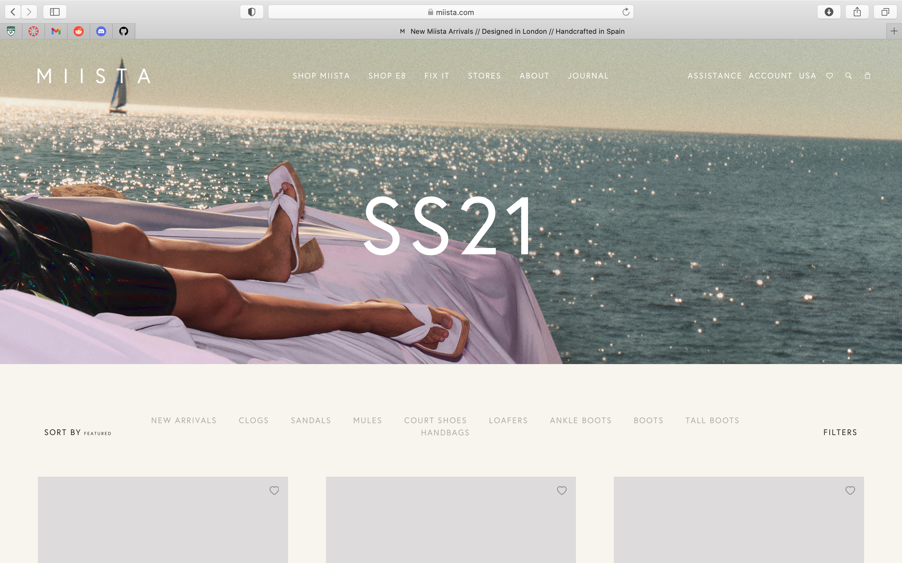
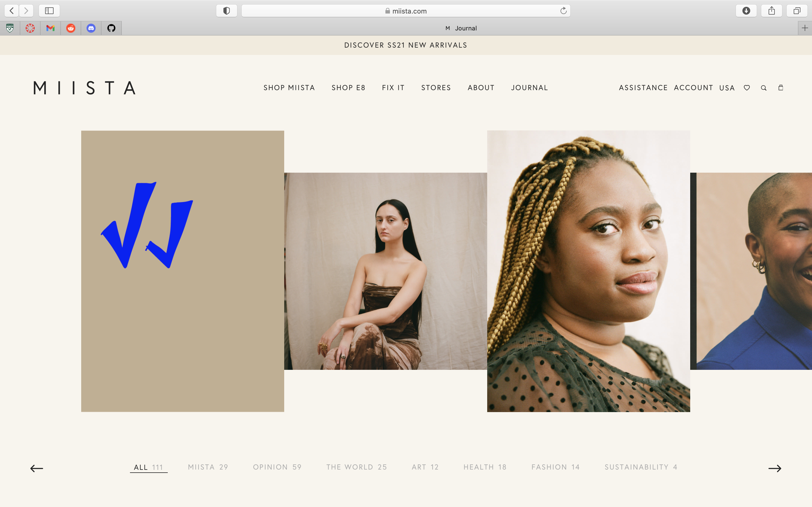
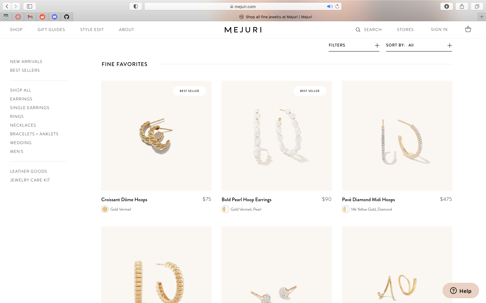
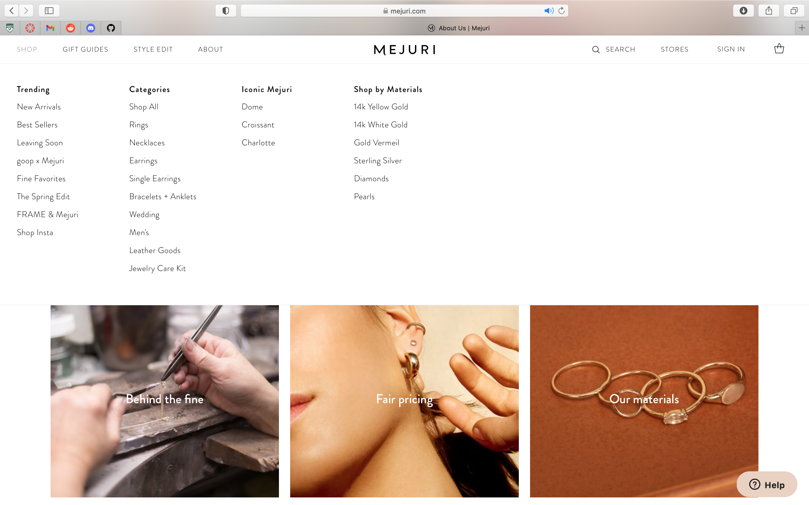

Final Project Proposal
Introduction
Blue Night
Blue Night is a susatinable and ethical jewelry brand based in San Jose, California. We set out to make simple yet stunning pieces you'll reach for everyday. We want to write a more beautiful story from beginning to end—starting with recycled materials whenever possible, transparent business practices always, and small-batch designs that are kind to the Earth. Our designs are intuitive and thoughtful, simple pleasures to look at and live in. Our goal is to enjoy and celebrate the beauty of the earth without leaving a trace.
Target Audience
Our target audience is between the ages of 18 and 40, based in the U.S. and cares for fashion and sustainabllity. A majority of our audience are active on social media and enjoys shopping on the internet.
Our audiences primary tasks and goals consist of being fashion forward and interested in engaging in sustianable and ethical practices in their daily activites and interests. Their interests may lie in fashion, design, and casual chic, minimal aesthetics. They are often full time workers and enjoy spending money on meaningful items and expereinces for themselves, family, and friends.
Comparative Analysis
Miista
 Orseudn Iris


Mejuri
 Website content
Home
Breathe Easy We're Carbon Neutral
Check out our best sellers below.
Shop All
Handcrafted and Ethically Sourced
Fair Pricing
Say goodbye to traditional 10x markups. We design fine jewelry that you can wear every single day. To make luxury accessible, we've built relationships with the best manufacturers and sell directly to you.
[The "Kevin" ring in silver laid on a gold rimmed miiror, reflrecting the sky.
High Quality
We believe in crafting sustainable jewelry accessible to all. Our production process respects both the craftspeople and the earth that make our jewelry possible
[The "Dobby" earrings on Michelle Choi]
Shop
- Latest Drop
- Best Sellers
- Necklaces
- Earrings
- Rings
- Bracelets & Anklets
- Sale Items
- Blue Night Gift Guide
[The Rosie necklace on one of our models.]
[The Sasha earring on one of our models.]
[The Syd ring on one of our models.]
[The Eidie bracelet on one of our models.]
Journals
May 30, 2020
Spring Edition
Our journals take a deep dive into the fashion and beauty world with new artists and designers every two weeks. These artist and designers leave their take on the world and trends paired with a personal photo diary in some of our favorite pieces.
On read with Toni-Blaze Ibekwe
[Toni-Blaze Ibekwe portrait in our Sasha hoop earring. ]
This year has really changed the fashion industry. I think we are going to be moving into a more sustainable way of working, we’ve already seen changes start with fashion week. Going from designers doing six shows per year, people are now designing with regards to what's important. I think we're going to see more of that and more of real timeless design as opposed to it being a pre-fall collection, a resort and all these seasons that we don't actually really need. I think the conversation that we need to have is, how do we sustain the industry in a less wasteful way? How do we design not just for consumption? How do we design a piece that you can buy into and just have it in your wardrobe for ages? I think the conversation we’re having about diversity is super important now. I think in terms of London, this conversation is key, because London has always been a hub for creativity, we've always been different. When you look at Vivienne Westwood, when you look at any of these designers, we've always had a system that is more inclusive than other cities. We've got amazing designers such as Bianca Saunders, who is a woman with Jamaican descent. We’ve got designers and people here in London from so many different backgrounds, and we're just this amazing melting pot. And that needs to be reflected in the industry as well. One of our winter covers for Wonderland was with Kai Isaiah Jamal, who is a poet, and just an amazing person. Honestly, it was one of those shots from which I just went home and I had warmth in me. And I also felt really creative. I think I'm lucky because I'm in a space where we don't have this massive backer behind us. And it's just very free when it comes to choosing who can be put on a cover. We can go from doing a shoot with Shawn Mendes and then Kai and at the same time tick every single box when it comes to creativity, when it comes to what's cool. I think Kai is a great example because maybe a few years ago, you wouldn't see a person of colour who is non conforming in regards to gender. And it warms my heart because we don't know whether young people who are looking at that cover are feeling exactly like Kai, or seeing Kai in themselves. So it is nice to know that someone, somewhere, hopefully, sees that cover and thinks: “I relate to this, this feels relatable”. And I think that's one of the most powerful tools that I have as an editor. I am hopeful for 2021. In terms of what it will look like - living and flourishing, that's the main thing! I think this whole period has taught us to not take things for granted. So my hope is to just live in every moment authentically. And I think it’s important to take work goals out of the equation. A goal of mine next year is to start mentoring more. I’m on the British Fashion Council’s Diversity Committee, and I want to use that position to start mentoring people more. I want to really be able to share everything I've learned with younger people who might not see a path for themselves in this industry. Toni-Blaze Ibekwe is the Editor-in-Chief of Wonderland Magazine.
About Us
We're Blue Night
Where jewelry comes with a beautiful backstory
History says fine jewelry for occasions, we say fine jewelry for every day. Minus the traditional markups, with new, limited-edition drops the first of every moneth. Handcrafted like the olden days, but designed for the golden days ahead. So forget occasions. Here’s to fine jewelry for me.
Making a lasting statement
Blue Night is a susatinable and ethical jewelry brand based in San Jose, California. We set out to make simple yet stunning pieces you'll reach for everyday. We want to write a more beautiful story from beginning to end—starting with recycled materials whenever possible, transparent business practices always, and small-batch designs that are kind to the Earth. Our designs are intuitive and thoughtful, simple pleasures to look at and live in. Our goal is to enjoy and celebrate the beauty of the earth without leaving a trace.
[Our "Bean" ring in gold laying in the sand.]